Masuk, pantau SOQ, terima barang, GR Outlet, dan laporan miss-picking
Tigalapan Indonesia · DC 38
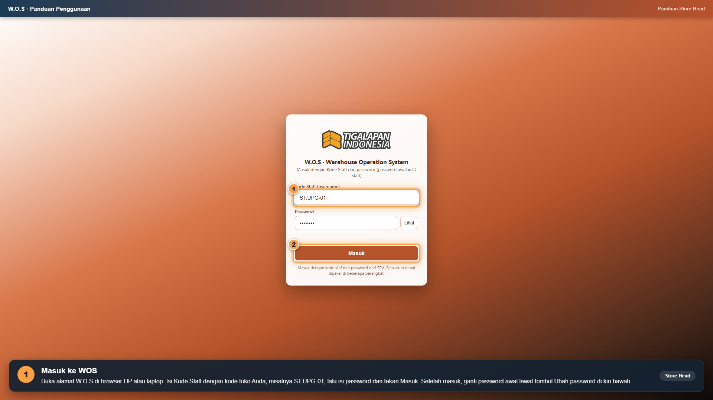
Buka alamat W.O.S di browser HP atau laptop. Isi Kode Staff dengan kode toko Anda, misalnya ST.UPG-01, lalu isi password dan tekan Masuk. Setelah masuk, ganti password awal lewat tombol Ubah password di kiri bawah.
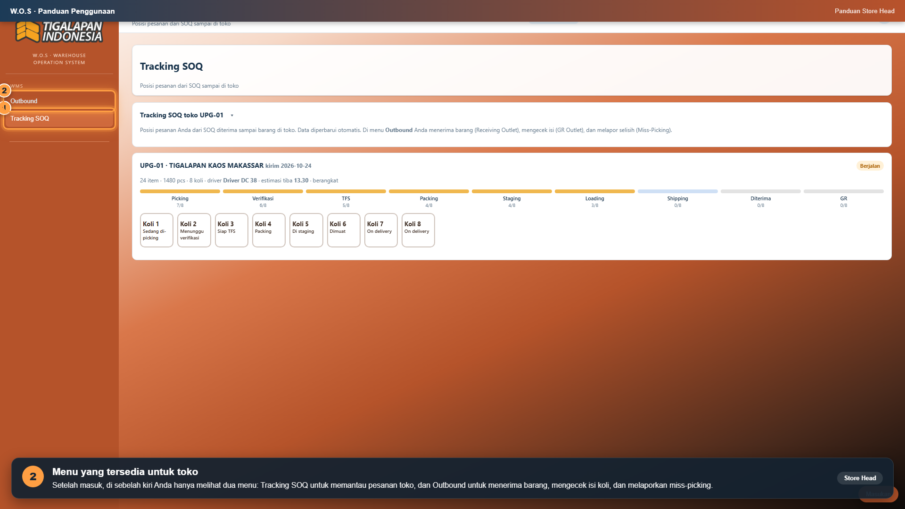
Setelah masuk, di sebelah kiri Anda hanya melihat dua menu: Tracking SOQ untuk memantau pesanan toko, dan Outbound untuk menerima barang, mengecek isi koli, dan melaporkan miss-picking.
Buka Tracking SOQ. SOQ toko Anda tampil lengkap dengan jumlah item, jumlah pcs, jumlah koli, nama driver, dan estimasi jam tiba. Dari sini Anda bisa menjawab pertanyaan: barang toko saya sekarang sudah sampai di mana?
Setiap koli berjalan melewati tahap Picking, Verifikasi, TFS, Packing, Staging, Loading, lalu Shipping. Kotak koli menunjukkan posisi masing-masing. Koli berstatus On delivery artinya sedang dalam perjalanan ke toko Anda.
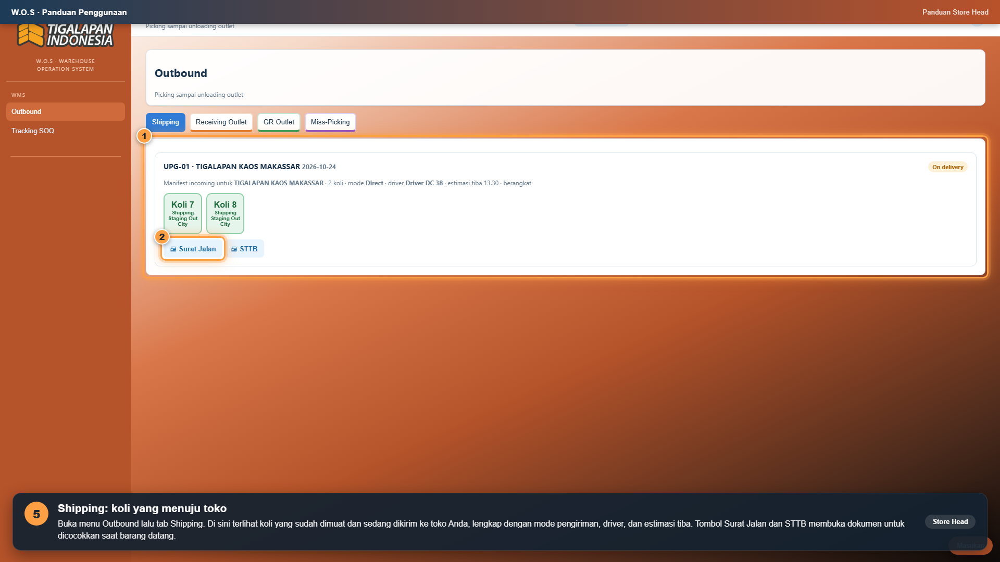
Buka menu Outbound lalu tab Shipping. Di sini terlihat koli yang sudah dimuat dan sedang dikirim ke toko Anda, lengkap dengan mode pengiriman, driver, dan estimasi tiba. Tombol Surat Jalan dan STTB membuka dokumen untuk dicocokkan saat barang datang.
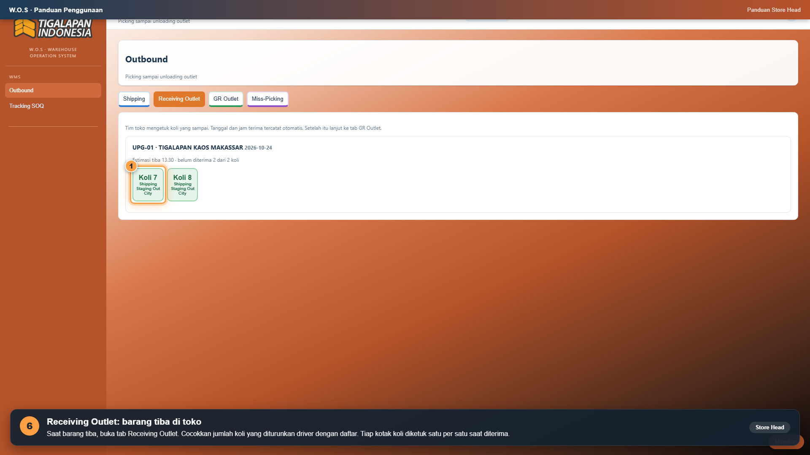
Saat barang tiba, buka tab Receiving Outlet. Cocokkan jumlah koli yang diturunkan driver dengan daftar. Tiap kotak koli diketuk satu per satu saat diterima.
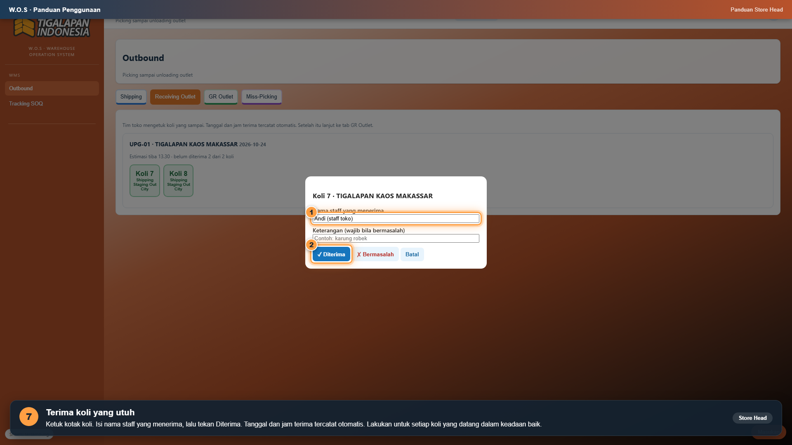
Ketuk kotak koli. Isi nama staff yang menerima, lalu tekan Diterima. Tanggal dan jam terima tercatat otomatis. Lakukan untuk setiap koli yang datang dalam keadaan baik.
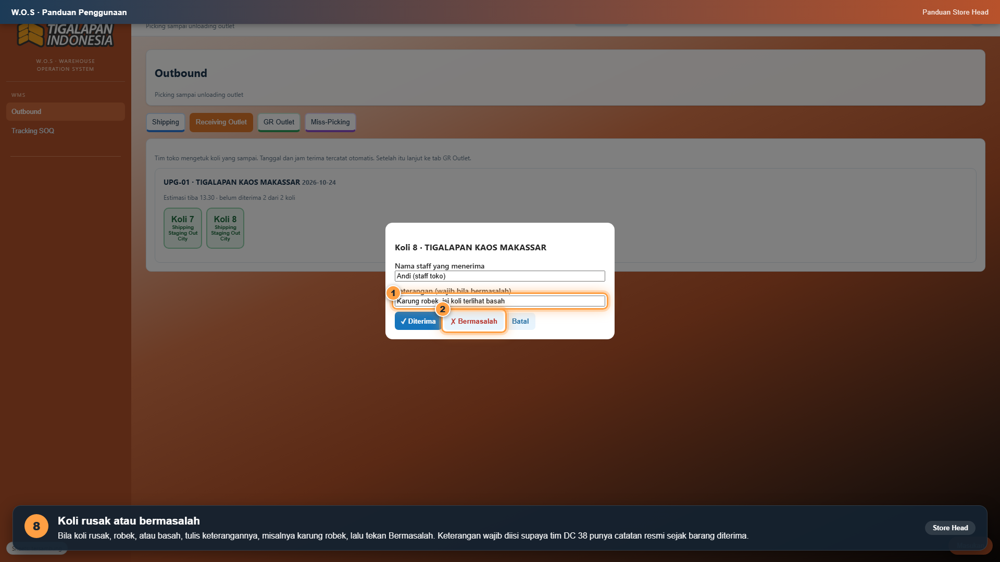
Bila koli rusak, robek, atau basah, tulis keterangannya, misalnya karung robek, lalu tekan Bermasalah. Keterangan wajib diisi supaya tim DC 38 punya catatan resmi sejak barang diterima.
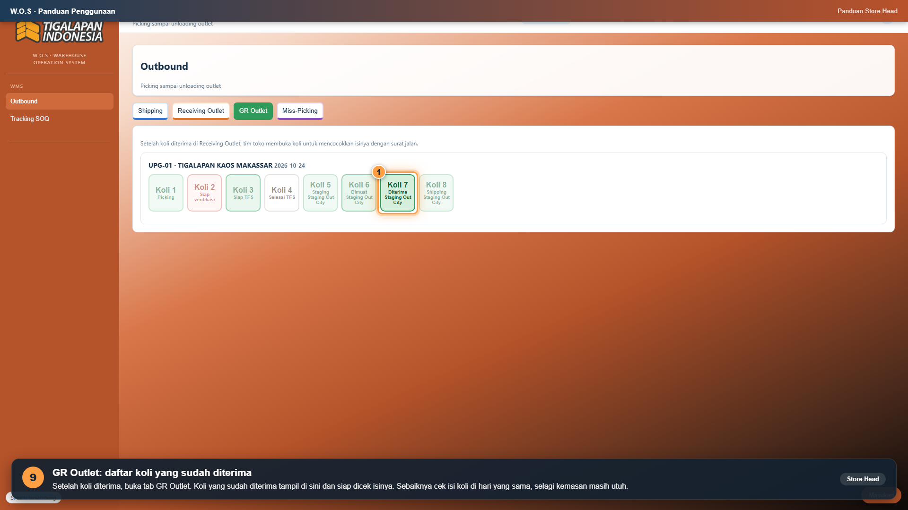
Setelah koli diterima, buka tab GR Outlet. Koli yang sudah diterima tampil di sini dan siap dicek isinya. Sebaiknya cek isi koli di hari yang sama, selagi kemasan masih utuh.
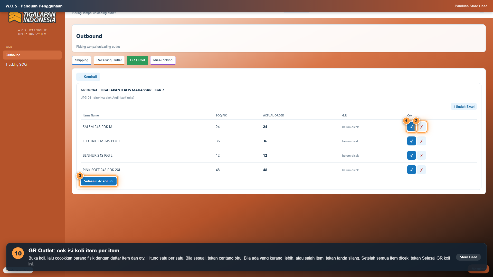
Buka koli, lalu cocokkan barang fisik dengan daftar item dan qty. Hitung satu per satu. Bila sesuai, tekan centang biru. Bila ada yang kurang, lebih, atau salah item, tekan tanda silang. Setelah semua item dicek, tekan Selesai GR koli ini.
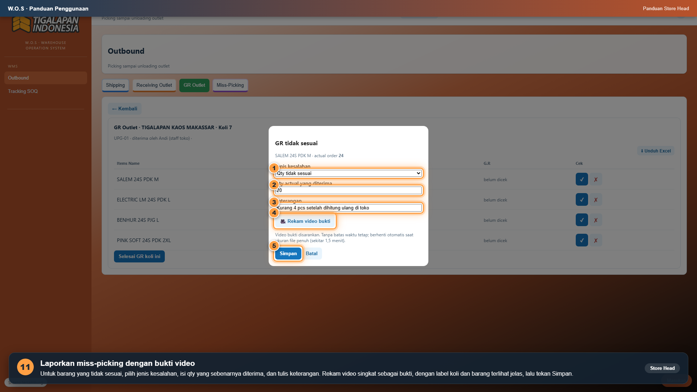
Untuk barang yang tidak sesuai, pilih jenis kesalahan, isi qty yang sebenarnya diterima, dan tulis keterangan. Rekam video singkat sebagai bukti, dengan label koli dan barang terlihat jelas, lalu tekan Simpan.
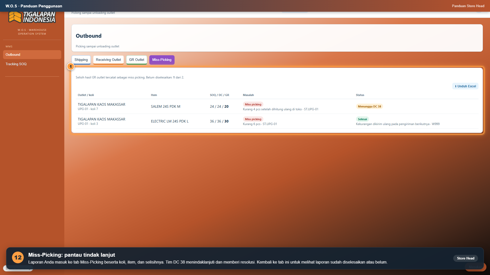
Laporan Anda masuk ke tab Miss-Picking beserta koli, item, dan selisihnya. Tim DC 38 menindaklanjuti dan memberi resolusi. Kembali ke tab ini untuk melihat laporan sudah diselesaikan atau belum.
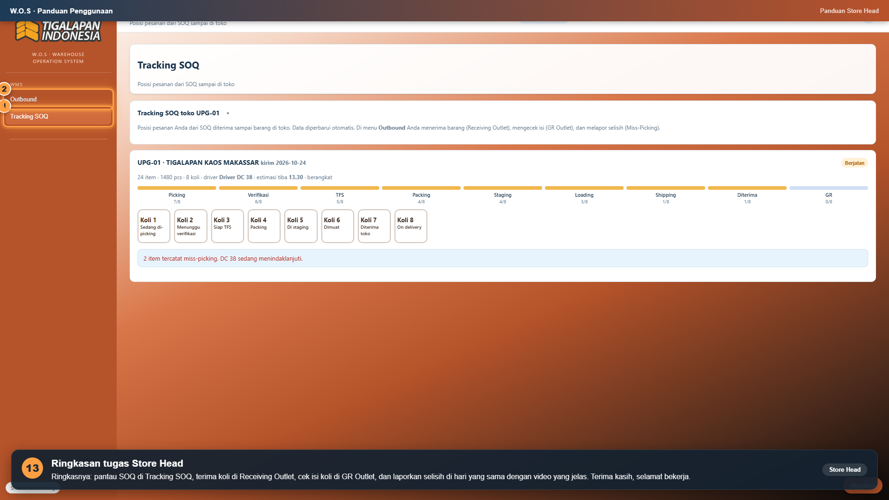
Ringkasnya: pantau SOQ di Tracking SOQ, terima koli di Receiving Outlet, cek isi koli di GR Outlet, dan laporkan selisih di hari yang sama dengan video yang jelas. Terima kasih, selamat bekerja.